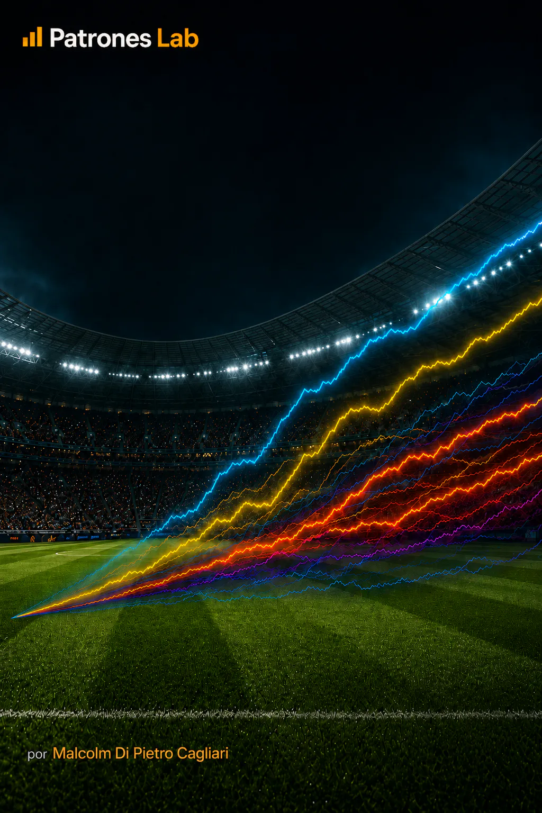

SPORTANALYTIK · PROJEKT 18

Projekt 15 · Fußballanalyse
Monte-Carlo-Simulation · Prognosen zur WM 2026
Simulation von 1.000.000 Szenarien des K.-o.-Turnierbaums der Fußball-WM 2026 mit Elo-Ratings. Aus den Wahrscheinlichkeiten jeder Begegnung berechnet die Analyse die Chancen auf das Erreichen des Halbfinals, den Finaleinzug und den Titelgewinn.
KONTEXT UND ZIEL
Das Projekt verwendet Elo-Ratings und Monte-Carlo-Simulation, um die Wahrscheinlichkeiten der Nationalmannschaften in der entscheidenden Phase der Fußball-WM 2026 zu schätzen. Die Analyse konzentriert sich auf K.-o.-Begegnungen und berechnet die Chancen auf das Erreichen des Halbfinals, den Finaleinzug und den Titelgewinn.
Verwendet werden die von World Football Elo Ratings veröffentlichten Ratings und der Turnierbaum mit Spielen, Terminen, Runden und bekannten Ergebnissen. Vor der Modellierung werden Mannschaften, fehlende Daten, Identifikatoren und die Verbindungen zwischen den Begegnungen überprüft.
Damit werden die Chancen jeder Nationalmannschaft auf das Weiterkommen in ihrem Spiel berechnet und mögliche Ausgänge des Turnierbaums simuliert. Die Sieger bereits ausgetragener Spiele bleiben als tatsächliche Ergebnisse erhalten. Ausstehende Begegnungen werden anhand der aus Elo geschätzten Wahrscheinlichkeiten entschieden.
MODELL UND SIMULATION
Aufbereitung des Turnierbaums und Elo-Ratings
Elo-Ratings ermöglichen den Vergleich der relativen Stärke von Nationalmannschaften auf einer gemeinsamen Skala. Dieses Projekt übernimmt die Werte aus einer externen Quelle und ergänzt sie zu den Daten jeder Mannschaft, um den Leistungsunterschied zum jeweiligen Gegner zu analysieren.
Der K.-o.-Turnierbaum wird nach Runden organisiert; die Verbindungen zwischen den Spielen werden erfasst. So lässt sich erkennen, welche Nationalmannschaften bereits einen feststehenden Gegner haben und welche aus vorherigen Begegnungen nachrücken können. Auch die Sieger bereits ausgetragener Spiele werden aufgezeichnet, damit sie während der Simulation erhalten bleiben.
Für jedes Spiel werden die Elo-Ratings beider Nationalmannschaften verglichen. Ihre Differenz beschreibt den relativen Vorteil der einen gegenüber der anderen: Je höher das Rating einer Mannschaft im Vergleich zum Gegner ist, desto größer sind laut Modell ihre Chancen auf das Weiterkommen.
DIFFERENZ DER ELO-RATINGS
ΔElo = Elo A − Elo B
Elo A und Elo B sind die Ratings der beiden Nationalmannschaften im Spiel. Ihre Differenz ermöglicht den Vergleich ihrer relativen Stärke, bevor die Chancen auf das Weiterkommen geschätzt werden.
Wahrscheinlichkeiten für das Weiterkommen je Begegnung
Die Elo-Differenz wird mit der logistischen Funktion des Elo-Systems in eine Wahrscheinlichkeit umgewandelt. Daraus werden die Chancen jeder Nationalmannschaft auf das Weiterkommen und die Ausgeglichenheit der Begegnung geschätzt.
WAHRSCHEINLICHKEIT DES WEITERKOMMENS NACH ELO
P(A) = 1 / (1 + 10^(−ΔElo/400))
P(B) = 1 − P(A)
P(A kommt weiter) und P(B kommt weiter) sind die Wahrscheinlichkeiten, dass die jeweilige Nationalmannschaft die Begegnung gewinnt. Zusammen ergeben sie 100 %, da aus jedem K.-o.-Spiel nur eine Mannschaft weiterkommt.
Wenn beide Nationalmannschaften einer Begegnung feststehen, wird die Wahrscheinlichkeit direkt aus ihren Ratings berechnet. Bei erst später feststehenden Begegnungen simuliert das Verfahren zunächst die vorherigen Runden und wendet dieselbe Formel auf die weitergekommenen Mannschaften an.
Monte-Carlo-Simulation des K.-o.-Turnierbaums
Die Simulation durchläuft den Turnierbaum vom Viertelfinale bis zum Finale. Jedes Szenario behält die Sieger bereits ausgetragener Spiele bei und verwendet Elo-Wahrscheinlichkeiten, um das Weiterkommen in den ausstehenden Begegnungen zu simulieren. Die Sieger ziehen in die nächste Runde ein, bis ein möglicher Turnierausgang vollständig ist.
Der Prozess wird 1.000.000-mal wiederholt. Jede Simulation erfasst, welche Nationalmannschaften das Halbfinale erreichen, das Finale bestreiten und den Titel gewinnen. Anschließend wird gezählt, wie oft jede Mannschaft die jeweilige Runde erreicht.
DURCH SIMULATION GESCHÄTZTE WAHRSCHEINLICHKEIT
P(R) ≈ nR / N
N = 1.000.000
N bezeichnet die Gesamtzahl der Simulationen und nR die Häufigkeit, mit der eine Nationalmannschaft die Runde R erreicht oder das Ergebnis R erzielt. Die relative Häufigkeit schätzt ihre Chancen, Halbfinalist, Finalist oder Weltmeister zu werden.
Aus diesen Häufigkeiten wird für jede Nationalmannschaft eine Zusammenfassung erstellt. Ihre Chancen auf den Titelgewinn können die Chancen auf den Finaleinzug nicht übersteigen; diese können wiederum nicht größer sein als die Chancen auf das Erreichen des Halbfinals. Da das Verfahren reproduzierbar ist, lassen sich die Wahrscheinlichkeiten bei der Aufnahme neuer Ergebnisse erneut berechnen.
ERGEBNISSE UND ERKENNTNISSE
Für jede Nationalmannschaft werden die Chancen auf das Erreichen des Halbfinals, den Finaleinzug und den Titelgewinn ermittelt. Die Analyse berechnet auch die Wahrscheinlichkeiten feststehender Begegnungen und fasst die Simulationsergebnisse geordnet zusammen.
Die Grafiken vergleichen die Chancen auf den Titelgewinn und das Weiterkommen in jeder Runde, zeigen die wahrscheinlichsten Finalpaarungen und mögliche Gegner auf dem Weg der einzelnen Nationalmannschaften. Die Wahrscheinlichkeiten dieser Wege ergeben sich aus ihrer Häufigkeit in den Simulationen.
Die Struktur des Turnierbaums verknüpft die Wahrscheinlichkeiten jedes Spiels mit den folgenden Runden. Die Chancen auf den Finaleinzug hängen deshalb sowohl von der Stärke einer Nationalmannschaft als auch von den möglichen Gegnern in ihrer Hälfte des Turnierbaums ab.
Das Projekt verbindet Datenaufbereitung und -validierung, den Vergleich von Elo-Ratings, die Berechnung der Wahrscheinlichkeiten jeder Begegnung und Monte-Carlo-Simulation. Neue Ergebnisse ermöglichen aktualisierte Prognosen und die Analyse sowohl der Chancen auf das Weiterkommen in jeder Runde als auch der Variabilität der Wege zwischen den Simulationen.